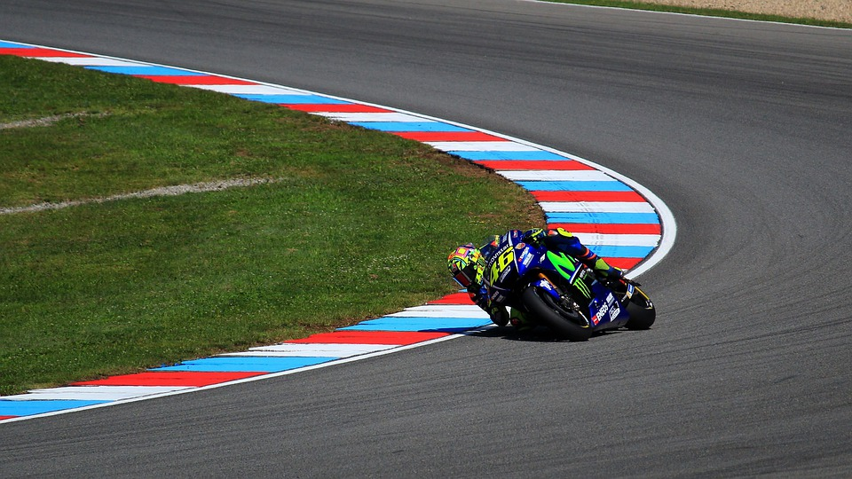
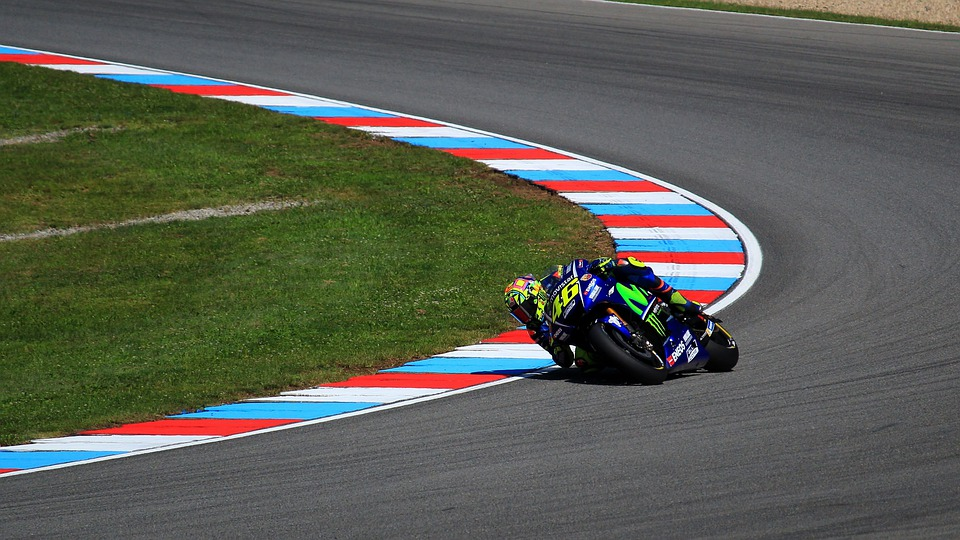

BIOGRAFIA VALENTINO ROSSI
Vóuvos conta-la vida de Valentino
Índice
Biografia
 

Neste link atoparás os arquivos media desta web
Valentino Rossi nació el 16 de febrero de 1979, en Urbino, Italia, y es un famoso piloto de motociclismo, considerado por los especialistas como el mejor piloto de la historia de este tipo de competencias. Hijo de Graziano Rossi, un reconocido motociclista, y de Stefanía Palma, ya desde muy pequeño, Valentino participó de varias carreras de karts apoyado por su padre, a pesar de que su madre temía por la peligrosidad de dichas competencias.
En 1992 se apoderó del primer puesto del campeonato regional de las mini motos, haciendo una gran demostración de manejo. En ese mismo año, consiguió la que sería su primera licencia para conducir como piloto del Moto Club Cattolica. Fue allí donde se lanzó a competir el campeonato italiano Sport production, pero en una práctica cayó luego de tomar una curva cerrada a alta velocidad, lo que puso en duda a su familia si realmente debería dedicarse a eso. A pesar de su fallido primer paso, Valentino Rossi volvió a probar suerte en el año 1994, participando en el campeonato Sport Production y en el GP Italiano, en donde tuvo destacadas actuaciones que lo llevaron a quedarse con el primer puesto en el SP. En 1995, ganó el campeonato de Italia de categoría 125 y consiguió clasificarse tercero para competir en el campeonato europeo de esa misma categoría.
TODA A BIOGRAFIA NUN CLICK NA WIKIPEDIA
Categorías nas que correu
Mundiais que gañou
| Categoría | ano | |
| motogp | 1994, | 1995 |
| 500 | 1994 | |
| 250 | 2007, | 2000 |